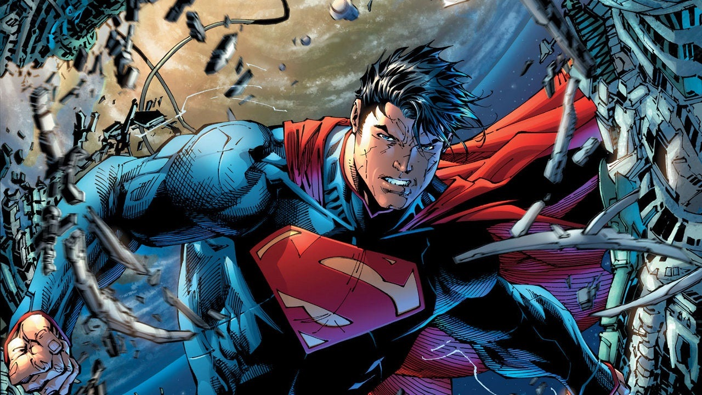
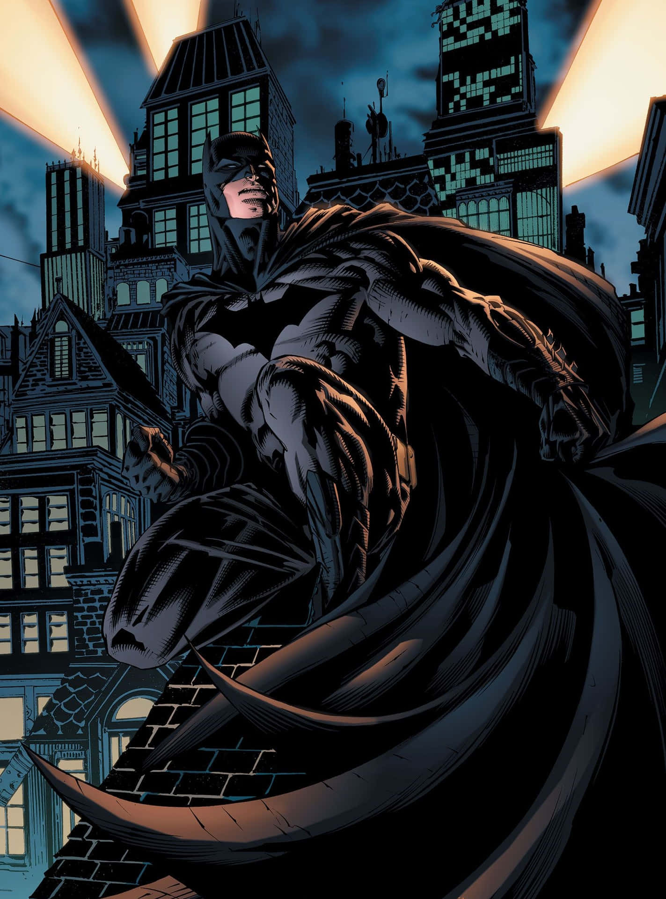
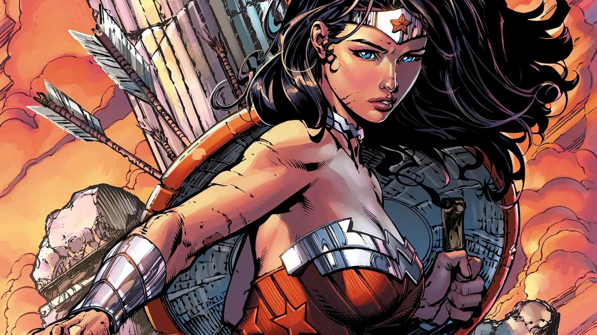

Os Novos 52
O New 52 foi a reformulação e relançamento de 2011 pela DC Comics de toda a sua linha de histórias em quadrinhos mensais de super-heróis. Após a conclusão do enredo crossover " Flashpoint ", a DC cancelou todos os seus títulos existentes e estreou 52 novas séries em setembro de 2011.
A editora promoveu a reestilização de todos os seus personagens, alterando várias de suas características, atraindo grande atenção da mídia especializada. Embora ainda não esteja claro que impacto tal decisão terá na continuidade das histórias.
Personagens e alterações

Superman: Foi o personagem que mais mudou. Nele, Superman ainda é Clark Joseph Kent, ou Kal-El, porém a mitologia de que o Erradicador causou a destruição de Krypton, foi retirada. Clark nunca foi o Superboy quando adolescente, o máximo que fez foi alguns atos heroicos em Smallville. Jonathan e Martha Kent não são mais presentes na vida de Clark, já que eles morreram antes de Clark se mudar para Metrópolis. Clark iniciou sua carreira como Superman muito antes que sua versão pós-crise, tendo se tornando o Superman com apenas 22 anos de idade, enquanto que antes ele tinha iniciado com 29. O relacionamento entre Clark e Lois Lane é inexistente nos Novos 52, apesar que eles tiveram um relacionamento no passado, atualmente Clark tem um caso com Diana Prince, a Mulher-Maravilha. O traje azul de Superman tem uma origem diferente, Clark roubou a roupa da nave de Brainiac e depois tingiu com as cores de azul e vermelho.

Batman: Um dos personagens que menos mudou, salvo algumas leves mudanças. O assassinato de Thomas e Martha Wayne teve uma origem diferente, o assassinato foi à mando da Corte das Corujas, uma sociedade secreta que rege Gotham secretamente. Bruce supostamente tem um irmão mais novo chamado Thomas Wayne Junior que trabalha para a Corte das Corujas, apesar que não há confirmação se ele é realmente o irmão de Bruce Wayne. Tim Drake nunca foi o Robin, apesar que ele foi criado e treinado por Bruce, ele pulou diretamente para Robin Vermelho e trabalha com os Jovens Titãs.

Mulher-Maravilha: Também mudou pouco, nessa versão, Diana Prince é uma semi-deusa, filha de Zeus, ao invés de ser uma amazona feita de barro como na versão pós-Crise. Na versão pós-crise ela tinha um relacionamento com Steve Trevor, mas nos Novos 52, ela tem um relacionamento com Clark Kent, o Superman. Nesta versão, Diana é tão superior quanto Superman, ou até mais. Ela possui novos poderes, novos acessórios e mais métodos de combate bem empoderados do que suas versões anteriores. Diana aqui é uma guerreira totalmente treinada para Guerra.